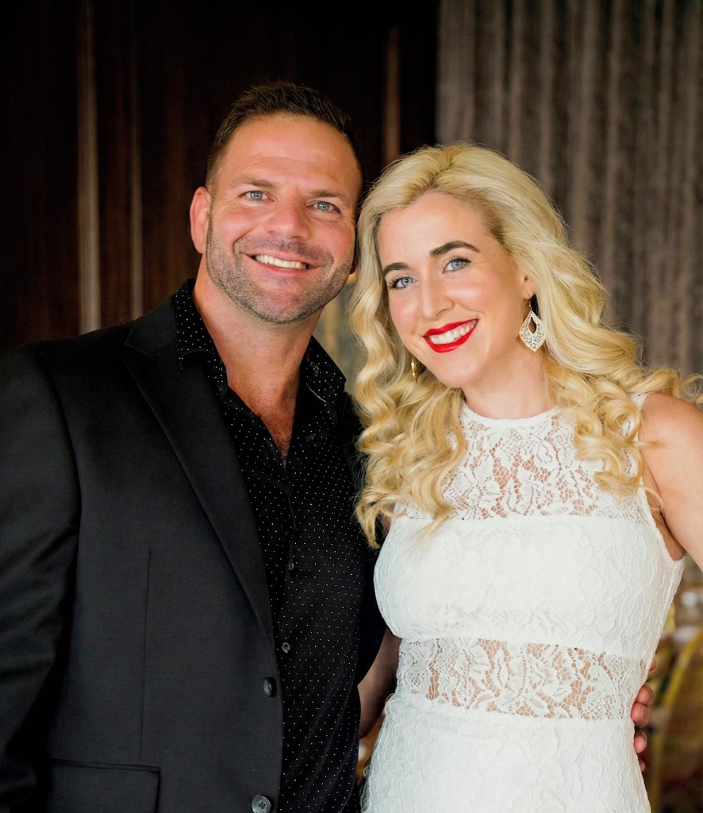
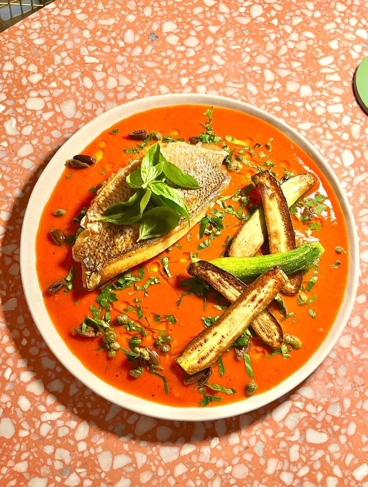

Our Story
Casual fine dining where European technique meets Jupiter's coastal soul.
Casual fine dining where European technique meets Jupiter's coastal soul.
The Salty Zebra Bistro is the vision of long-time Jupiter locals, Stephanie and Seamus O'Brien. With deep roots in the local dining scene, they envisioned a place that married the precision of a chef-driven kitchen with the unpretentious warmth of a neighborhood gathering spot.
We believe that "fine dining" doesn't have to feel stiff. It should be about the quality of the ingredients, the care in the preparation, and the joy of sharing a meal.

Under the guidance of Executive Chef Michael Luth, our kitchen celebrates the intersection of classic European techniques and Florida's seasonal bounty.
Every noodle is made in-house daily, ensuring the perfect texture and bite in dishes like our Colorado Lamb Ragout.
We partner with local purveyors like Colab Farms and Kai Kai Veg to bring the freshest Florida produce to your plate.
From our signature Steak Au Poivre to our daily rotating sorbets, every dish is crafted with intention and passion.
